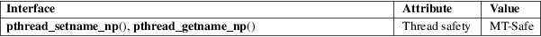

pthread_setname_np, pthread_getname_np − set/get the name of a thread
POSIX threads library (libpthread, −lpthread)
#define
_GNU_SOURCE /* See feature_test_macros(7) */
#include <pthread.h>
int
pthread_setname_np(pthread_t thread, const
char *name);
int pthread_getname_np(pthread_t thread,
char name[.size], size_t
size);
By default, all the threads created using pthread_create() inherit the program name. The pthread_setname_np() function can be used to set a unique name for a thread, which can be useful for debugging multithreaded applications. The thread name is a meaningful C language string, whose length is restricted to 16 characters, including the terminating null byte ('\0'). The thread argument specifies the thread whose name is to be changed; name specifies the new name.
The pthread_getname_np() function can be used to retrieve the name of the thread. The thread argument specifies the thread whose name is to be retrieved. The buffer name is used to return the thread name; size specifies the number of bytes available in name. The buffer specified by name should be at least 16 characters in length. The returned thread name in the output buffer will be null terminated.
On success, these functions return 0; on error, they return a nonzero error number.
The pthread_setname_np() function can fail with the following error:
|
ERANGE |
The length of the string specified pointed to by name exceeds the allowed limit. |
The pthread_getname_np() function can fail with the following error:
|
ERANGE |
The buffer specified by name and size is too small to hold the thread name. |
If either of these functions fails to open /proc/self/task/tid/comm, then the call may fail with one of the errors described in open(2).
For an explanation of the terms used in this section, see attributes(7).

GNU; hence the suffix "_np" (nonportable) in the names.
glibc 2.12.
pthread_setname_np() internally writes to the thread-specific comm file under the /proc filesystem: /proc/self/task/tid/comm. pthread_getname_np() retrieves it from the same location.
The program below demonstrates the use of pthread_setname_np() and pthread_getname_np().
The following shell session shows a sample run of the program:
$
./a.out
Created a thread. Default name is: a.out
The thread name after setting it is THREADFOO.
^Z # Suspend the program
[1]+ Stopped ./a.out
$ ps H −C a.out −o 'pid tid cmd comm'
PID TID CMD COMMAND
5990 5990 ./a.out a.out
5990 5991 ./a.out THREADFOO
$ cat /proc/5990/task/5990/comm
a.out
$ cat /proc/5990/task/5991/comm
THREADFOO
Program
source
#define _GNU_SOURCE
#include <err.h>
#include <errno.h>
#include <pthread.h>
#include <stdio.h>
#include <stdlib.h>
#include <string.h>
#include <unistd.h>
#define NAMELEN 16
static void *
threadfunc(void *parm)
{
sleep(5); // allow main program to set the thread name
return NULL;
}
int
main(int argc, char *argv[])
{
pthread_t thread;
int rc;
char thread_name[NAMELEN];
rc =
pthread_create(&thread, NULL, threadfunc, NULL);
if (rc != 0)
errc(EXIT_FAILURE, rc, "pthread_create");
rc =
pthread_getname_np(thread, thread_name, NAMELEN);
if (rc != 0)
errc(EXIT_FAILURE, rc, "pthread_getname_np");
printf("Created
a thread. Default name is: %s\n", thread_name);
rc = pthread_setname_np(thread, (argc > 1) ? argv[1] :
"THREADFOO");
if (rc != 0)
errc(EXIT_FAILURE, rc, "pthread_setname_np");
sleep(2);
rc =
pthread_getname_np(thread, thread_name, NAMELEN);
if (rc != 0)
errc(EXIT_FAILURE, rc, "pthread_getname_np");
printf("The thread name after setting it is
%s.\n", thread_name);
rc =
pthread_join(thread, NULL);
if (rc != 0)
errc(EXIT_FAILURE, rc, "pthread_join");
printf("Done\n");
exit(EXIT_SUCCESS);
}
prctl(2), pthread_create(3), pthreads(7)